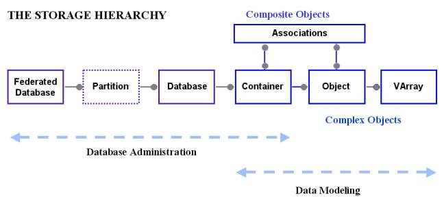

Objectivity/DB recognizes the need to distribute the data as well as the processing. If you think about what gets distributed through the network it is both processes and files. Any node on the network can have any number of processes accessing any number of files in the network. To distribute the data in the network Objectivity/DB needs to manage many files. If there is only one file you may remember the physical location (node and path) where the database file is located. This may be true for several database files. What if there are hundreds or thousands of database files distributed through the network? Will you remember the physical location of every one of these database files? Objectivity/DB introduces the Federated Database to help you. This contains a catalog of databases, which is a logical database name (or ID) to physical location mapping. To access a particular database you provide the logical name, which is usually something meaningful to you or the application, and Objectivity/DB uses the catalog to find the physical location of the file representing the database, and connects you to the database.
“So how do I create a Federated Database?” you might ask. The Examples use a Federated Database created within the Visual C++ Workspace environment. This uses an Objectivity/DB tool, oonewfd, to create an empty Federated Database.
We mentioned concurrency control above. Objectivity/DB uses a lock server process to manage concurrent access to the database. This is an Objectivity process running on any node in the network, this is the Lock Server Host field. We mentioned recovery management above. Objectivity/DB uses journal files to help recover the database to the last consistent state. These are the Journal Dir Host and Journal Dir fields. Finally we need to know how to access all this important information. This information is stored in a simple character file called the bootstrap file. These are the Boot File Dir and Boot File fields.
The Federation is the collection of physical files (Federated Database, Databases and Journals) and processes (Lock Server). Objectivity/DB accesses these files and processes via the boot file. The name for the boot file is generated from the System Name field by appending the suffix “.boot”.
Now you can complete the creation of the Federation by hitting “Finish”.
Note: Partitions are used in the Objectivity High Availability Option to support Fault Tolerant operations and Database Replication.
Objectivity/DB stores data, the objects, in databases. A Federation consists of one or more databases. Each database is represented physically as a file. The database developer, not the database management system, decides the creation and location of the database file. Databases can be created programmatically or within Objectivity/Assist.
When you look at how data is accessed it is typically not all records in a table but a group of logically related objects. For example a drawing is made of many shapes such as lines and curves, and text objects. You typically want to access the drawing and all objects that make up the drawing. These objects are of different types and each object is related to many other objects. You want an efficient way to access the drawing and the objects that make up the drawing. For efficient physical access you want to cluster the component objects physically together on disk, to minimize the disk I/Os to transfer the drawing objects from the database file on disk to the application process memory. To control concurrent access to the drawing you need an efficient mechanism to lock the drawing and its component objects in one operation. To achieve this Objectivity/DB introduces the Container. The Container allows Objectivity/DB to cluster objects physically together and provides the mechanism to lock a logical group of objects in one operation.
Containers are created in Databases. Containers are created programmatically. However when Objectivity/DB creates a database a default container is created automatically in the database to hold any objects created before an application creates any application defined containers.
You can get a graphical view of the Federation using Objectivity/Assist Data view.
An object is the fundamental logical unit of storage in Objectivity/DB. An object is typically an instance of a class in the OO programming language. Object Classes are defined in the Objectivity/DB Schema. Object instances are created programmatically.
Associations are used in Objectivity/DB to create relationships between objects. Associations are defined in the Objectivity/DB Schema. Instances of the associations between objects are created programmatically. Associations can be used to create a composite object consisting of many other objects linked together through associations.
A Varray is a fundamental storage element in Objectivity/DB. It is used for storing varying sized arrays of data. An object may have many Varrays (varying sized pieces of data.